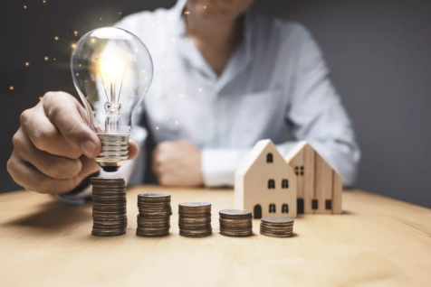

Os 'vilões' da luz: veja o que mais gasta energia e como economizar
Ar-condicionado, notebook, máquina de lavar e outros eletrodomésticos da sua casa podem pesar na conta de luz no final do mês; dicas para usá-los e economizar
Por Carolina Zanatta, do TechTudo
29/01/2022 8h00 Atualizado há um dia

Alguns eletrônicos e eletrodomésticos da sua casa consomem mais energia do que outros. Em 2021, houve um aumento de 20% na conta de luz, e uma tarifa adicional de R$ 14 passou a ser cobrada a cada 100 kWh (Quilowatt-hora, medida de energia) consumidos. Para economizar nos gastos, entender como os dispositivos que você mais usa funcionam pode fazer diferença no preço do boleto do fim do mês. Aparelhos que transforma energia elétrica em calor, como geladeiras e chuveiros, são os que mais impactam na conta de luz. No entanto, sem uso consciente, até mesmo itens como computadores e videogames podem pesar no final do mês. Veja a seguir quais são os eletrônicos e eletrodomésticos que mais consomem energia na sua casa. Também conversamos com o coordenador do programa de energia e sustentabilidade do Instituto Brasileiro de Defesa do Consumidor (Idec), Clauber Leite, que deu dicas que vão te ajudar a economizar.
LEIA: 5 coisas que a sua Smart TV sabe sobre você e como se proteger Essencial em nossas vidas, a geladeira ajuda a manter alimentos e bebidas em um bom estado de conservação. Para isso, ela retira o seu calor interno, transferindo-o para a região externa a ela. Esse processo de transformação é bastante custoso porque envolve a transformação de energia elétrica em calor, o que consome bastante luz. Uma geladeira comum, sem ser frost-free, consome em média 93 kWh mensais - ou, de acordo com a calculadora da Enel, cerca de R$ 80 na conta de luz. Dependendo da potência dela e de suas outras características (como, por exemplo, o seu tipo de motor), é possível que esse valor seja maior ou menor. Além de suas especificidades, há ainda outros fatores que podem impactar esse nível de consumo. Como as geladeiras trabalham para manter seu ambiente interior a temperaturas mais baixas, quando abrimos suas portas nós mudamos o seu equilíbrio interno. Isso ocorre por causa da troca direta de calor com o exterior. Segundo o coordenador do programa de energia e sustentabilidade do Instituto Brasileiro de Defesa do Consumidor (Idec), Clauber Leite, quando em excesso, essa ação pode pesar na conta de luz. "Se você abrir e fechar [a geladeira] muitas vezes, mudando esses fatores internos de temperatura, o motor da geladeira vai acionar mais vezes e, consequentemente, vai consumir mais energia", diz. Por isso, de acordo com Clauber, o ideal é manter uma relação consciente com a geladeira, abrindo-a apenas quando necessário. Desse modo, para quem deseja economia, aquela clássica história de passar vários minutos com a porta aberta, apenas encarando o interior do eletrodoméstico,também deve ser deixada de lado.
Segundo a mesma lógica da geladeira, o chuveiro elétrico é outro "inimigo" da conta de luz. O motivo é simples: para aquecer a água, o aparelho também precisa converter energia em calor. Como o processo é custoso para o dispositivo, seu consumo energético acaba sendo alto também